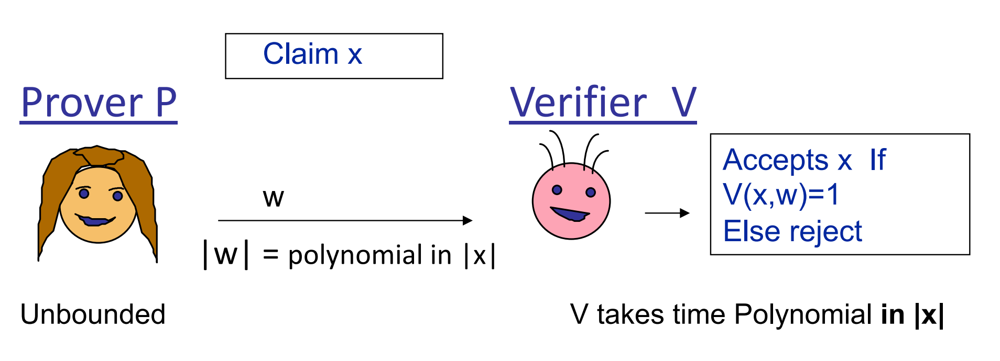
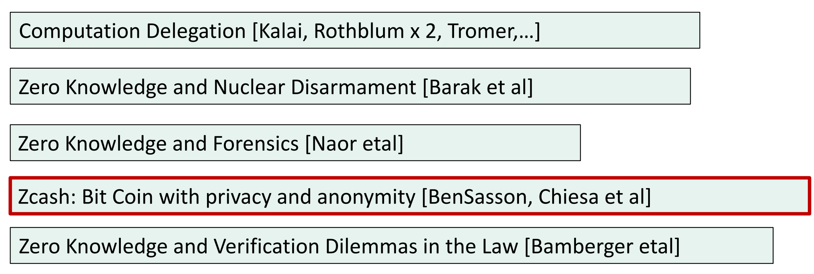

Brief Introduction to Zero Knowledge
Interactive Proof
Zero-knowledge proofs (ZKP) are a powerful cryptographic tool that allow one party (the prover) to convince another party (the verifier) that a statement is true, without revealing any additional information beyond the statement's validity.
To understand zkp, it's helpful to first consider interactive proofs, involving interaction between the prover and verifier. We only consider efficiently verifiable proofs, a type of interactive proof using a verification string to confirm the validity of a statement. The verification string \(w = poly(|x|)\), and the verification time \(t =poly(|x|)\).

ZKP is applied to NP languages, which are those that can be verified in polynomial time. The verifier must be able to confirm the truthfulness of a statement and reject false statements. This is known as completeness and soundness, respectively:
- \(\forall x \in L,\exists w ,V(x,w) = 1\)
- \(\forall x \notin L,\forall w ,V(x,w) = 0\)
Interactive proof involves two additional ingredients: randomness and interaction:
-
Randomness: Verifier is randomized, and the verifier can also have an error with negligible probability $$ Pr[(P,V)(x) = accept] \leq negl(\lambda) $$
-
Interaction: Prover interact with the verifier.
This class of language which has an interactive proof is called IP language.
Zero Knowledge
The goal of zkp is to allow the verifier to gain no knowledge beyond the validity of the statement being proven. After the interactive proof, the verifier can only obtain the true value and the view of the interactions: $$ View = (q_{1},a_{1},q_{2},a_{2},...) $$ The simulation paradigm allows the verifier to simulate a view, which is indistinguishable from the real view. This is achieved through computational indistinguishability, where two distributions are considered indistinguishable if they can only be differentiated with negligible probability \(negl(\lambda)\).
We write it formally as follows: $$ View(P,V)(x) \approx Sim(x,1^{\lambda}) $$ There are different flavors of zkp, such as computational indistinguishable, perfect identical, and statistical close distribution zkp. These are distinguished based on the degree of similarity between the simulated and real views.
Application
Zkp has practical applications in proving properties about messages without revealing the message itself, or in computing a function of two parties' inputs without disclosing their inputs to each other (secure 2-party computation).

Complexity Theory
In complexity theory, zkp is considered the randomized analogue to the NP class.
| No Randomization | With Randomizations | |
|---|---|---|
| Efficiently Solvable | P (Polynomial time) | BPP (Bounded-error Probabilistic Polynomial time) |
| Efficiently Verifiable | NP (Non-deterministic Polynomial time) | IP (Interactive Polynomial time) |
Computer scientist has proved that IP is greater than NP. Furthermore, we can use Arthur-Merlin game to simplify ZKP, in which the verifier only need to compute a decision function. We can also use Fiat-Shamir paradigm removes the need for interaction in the verification process.